What is Infrastructure as Code?
The Problem with Manual Configuration
Manually Configuring your cloud infrastructure allows you to easily start using new service offerings to quickly prototype architectures however it comes with mant downsides:
- Its easy to misconfigure a service through human error
- Its hard to manage the expected state of configuration for compliance
- Its hard to transfer configuration knowledge to other team members
Infrastructure as Code (IaC)
You write a configuration script to automate creating, updating, or destroying cloud infrastructure.
- IaC is a blueprint of your infrastructure
- IaC allows you to easily share, version, or inventory your cloud infrastructure.
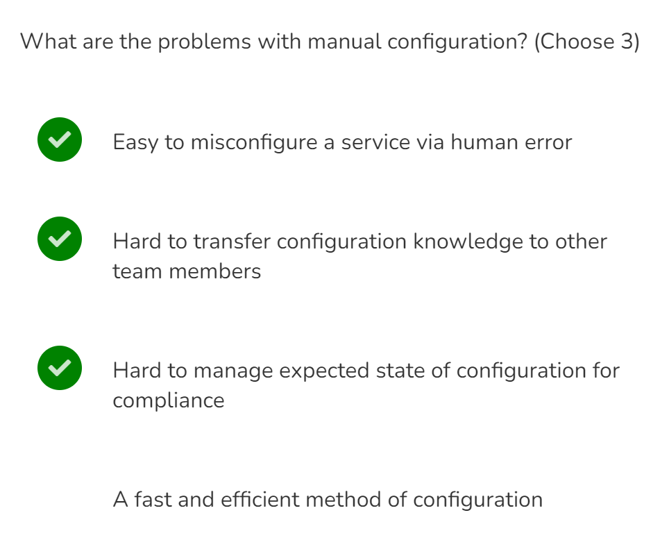
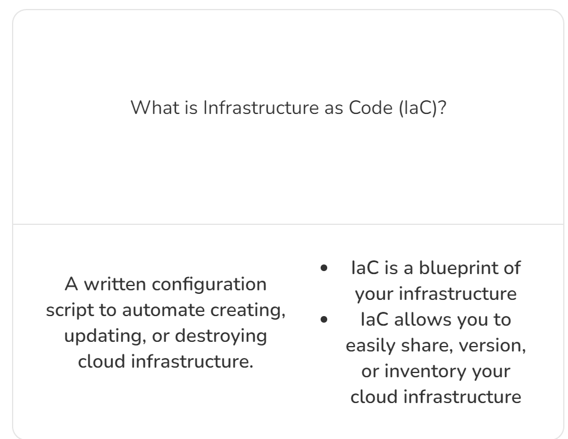
Popular Infrastructure as Code tools (IaC)
>Declarative
- You say what you want, and the rest is filled in. Explicit
- More verbose, but zero chance of misconfiguration
- Uses scripting languages eg. JSON, YAML, XML
ARM Templates
- Supports Azure Only
Azure Blueprints
- Supports only Azure
CloudFormation
- Only for AWS
Cloud Deployment Manager
- Supports on Google Cloud
Terraform
- Supports many cloud service providers (CSPs) and cloud services
Imperative
- What you see is what you get. Implicit
- Less verbose, you cloud end up with misconfiguration
- Does more than Declarative
- Uses programming languages eg. Python, Ruby, JavaScript
AWS Cloud Development Kit (CDK)
- Supports only AWS
- Many built-in templates for opinionated best practices
Pulumi
- Supports AWS, Azure, GCP, K8
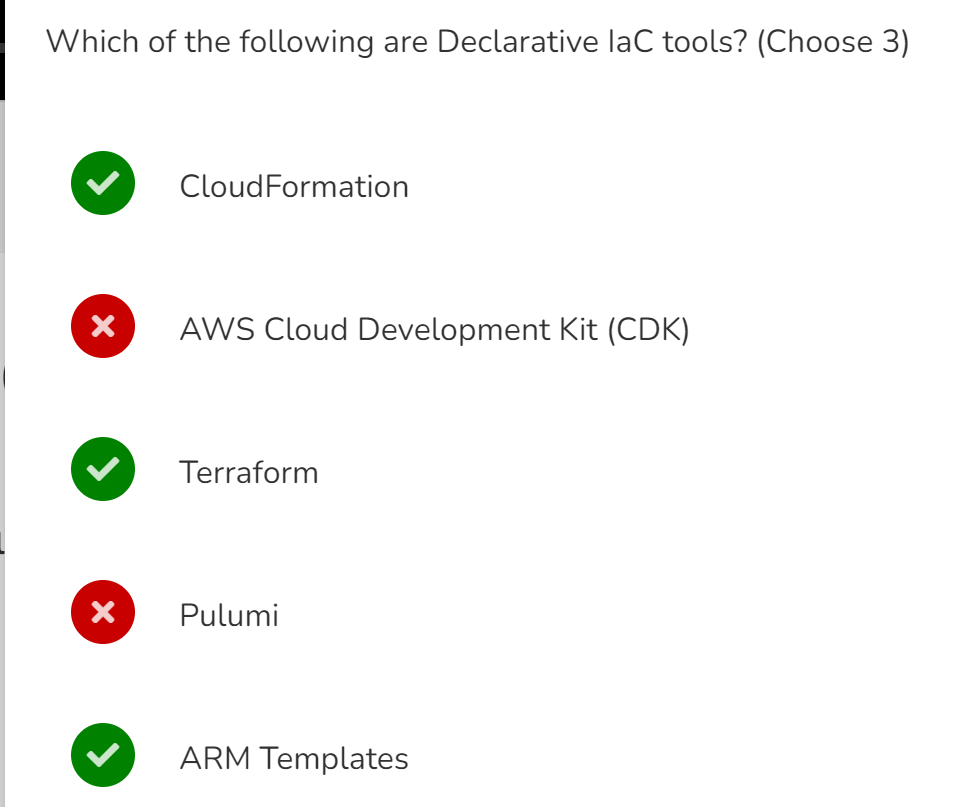
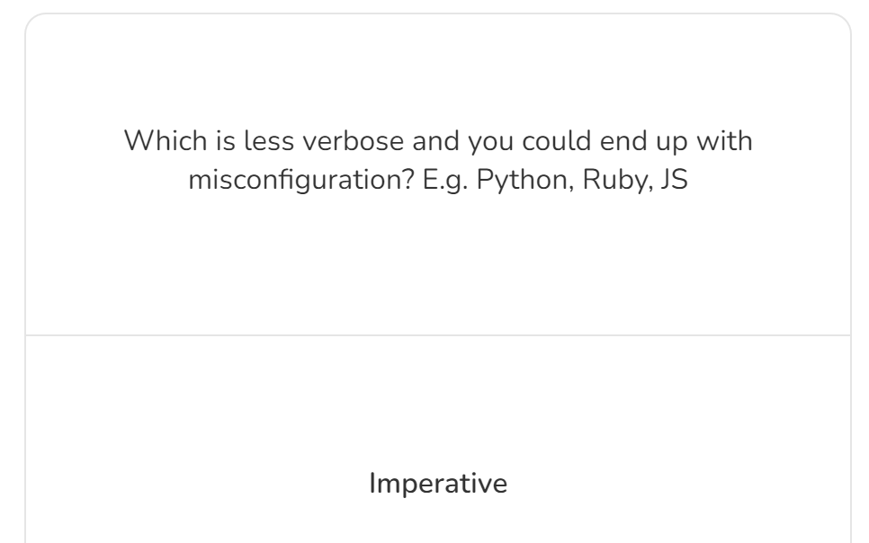
Declarative
Terraform is declarative but the Terraform Language features imperative-like functionality.
Declarative
YAML, JSON, XML
- Limited or no support for imperative-like features.
- In some cases, you can add behaviour by extending the base language. E.g. CloudFormation Macros.
Declarative|Imperative
HCL-ish (Terraform Language)
Supports:
- Loops (For Each)
- Dynamic Blocks
- Locals
- Complex Data Structure
- Maps, Collections
Imperative
Ruby, Python, JavaScript…
- Imperative features are the utility of the entire feature set of the programming language.
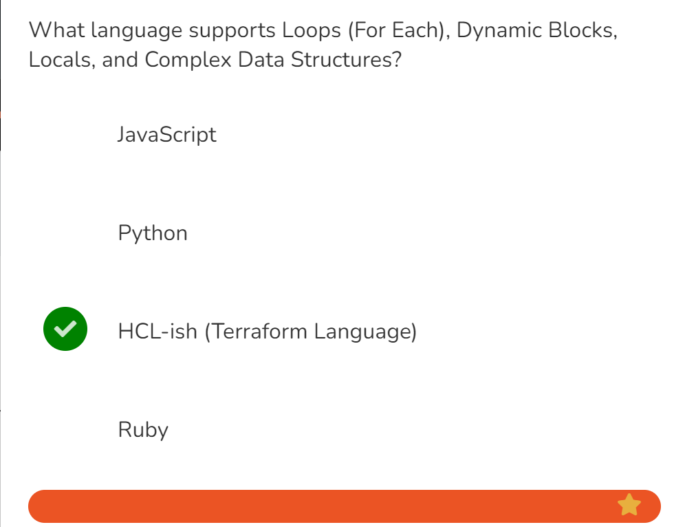
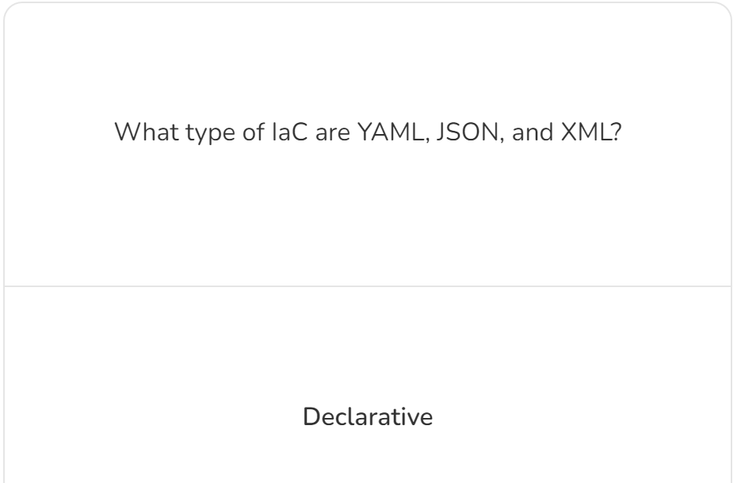
Infrastructure Lifecycle
What is Infrastructure Lifecycle?
the idea of having clearly defined and distinct work phases which are used by DevOps Engineers to plan, design, build, test, and deliver, maintain and retire cloud infrastructure.
What is Day 0, Day 1, and Day 2?
Day 0-2 is a simplified way to describe phases of an infrastructure lifecycle
- Day 0 - Plan and Design
- Day 1 - Develop and Iterate
- Day 2 - Go live and maintain
Days do not literally mean a 24 hour day and is just a broadway of defining where infrastructure project would be
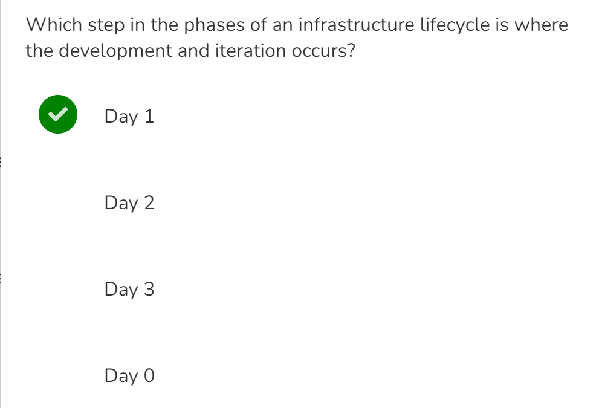
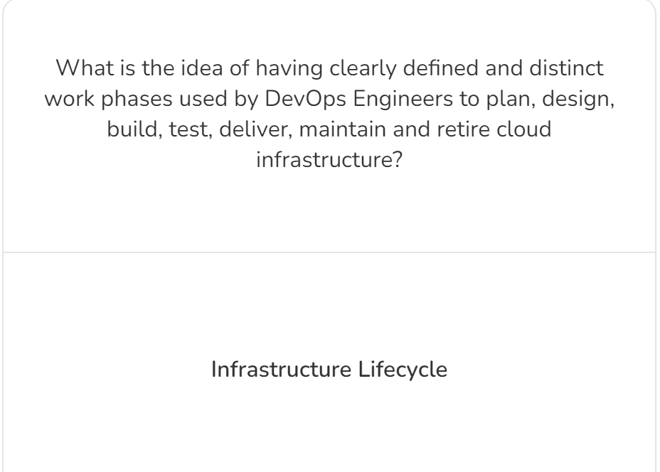Infrastructure Lifecycle Advantages
How does IaC enhance the Infrastructure Lifecycle?
Reliability
IaC makes changes idempotent, consistent, repeatable, and predictable.
Idempotent
No matter how many times you run IaC, you will always end up with the same state that is expected
Manageability
- enable mutation via code
- revised, with minimal changes
Sensibility
avoid financial and reputational losses to even loss of life when considering government and military dependencies on infrastructure
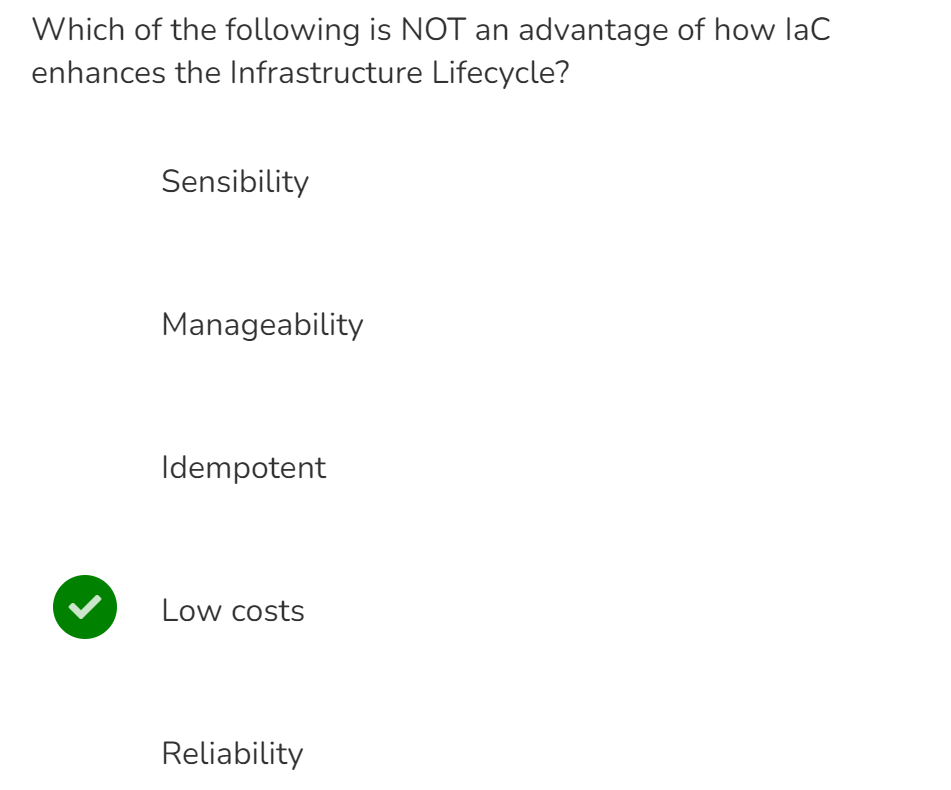
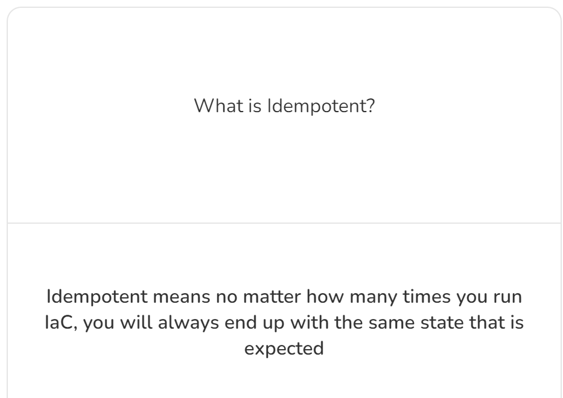
Non-Idempotent vs Idempotent
Non-Idempotent
When I deploy my IaC config file it will provision and launch 2 virtual machines
When I update my IaC and deploy again, I will end up with 2 new VMs with a total of 4 VMs
IaC: 2 VMs
We expect a state of 2
We end up with 4
Idempotent
When I deploy my IaC config file it will provision and launch 2 virtual machines
When I update my IaC and deploy again, it will update the VMs if changed by modifying or deleting and creating new VMs
IaC: 2 VMs
We expect a state of 2
We end up with 2
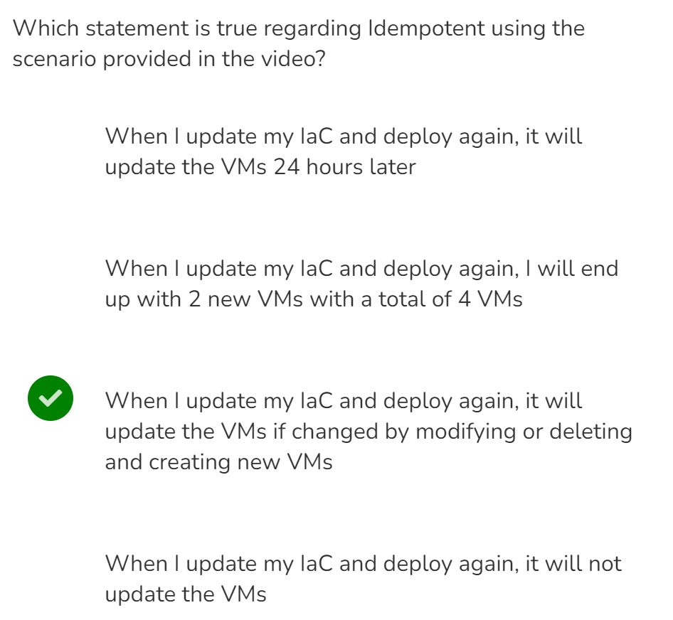
Provisioning vs Deployment vs Orchestration
Provisioning
To prepare a server with systems, data, and software, and make it ready for network operation.
Using Configuration Management tools like Puppet, Ansible, Chef, Bash scripts, PowerShell, or Cloud-Init you can provision a server.
When you launch a cloud service and configure it you are “provisioning”
Deployment
Deployment is the act of delivering a version of your application to run a provisioned server.
Deployment could be performed via AWS CodePipline, Harness, Jenkins, Github Actions, CircleCI
Orchestration
Orchestration is the act of coordinating multiple systems or services.
Orchestration is a common term when working with microservices, Containers, and Kubernetes.
Orchestration could be Kubernetes, Salt, Fabric
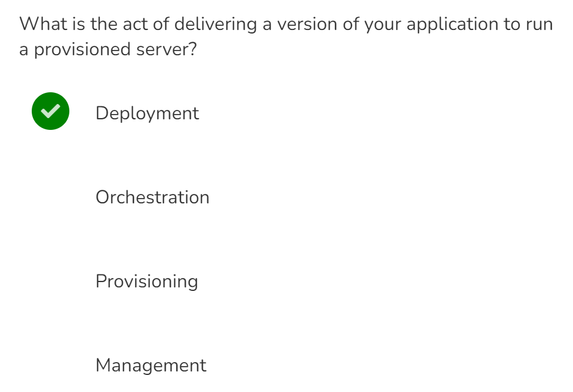
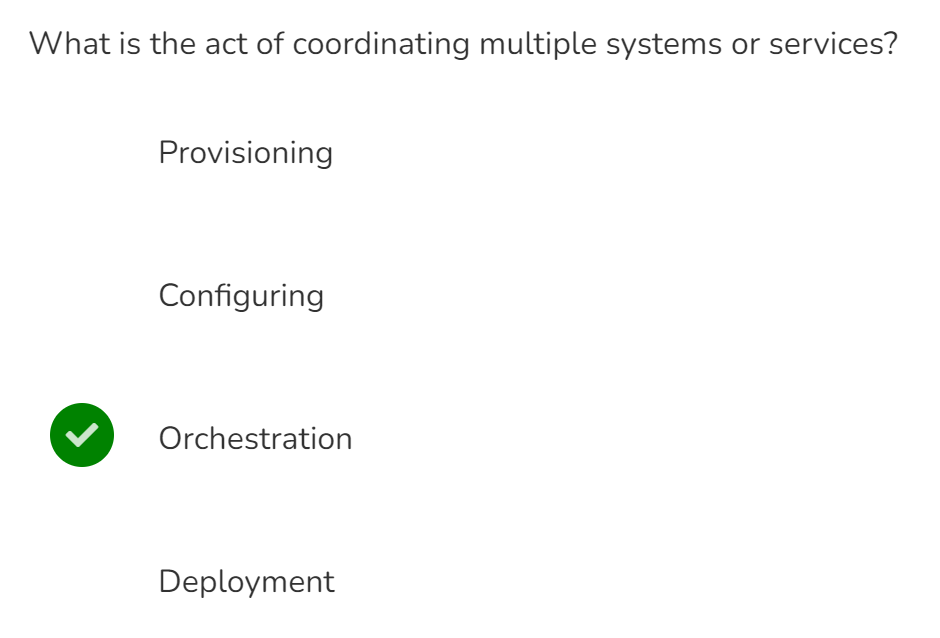
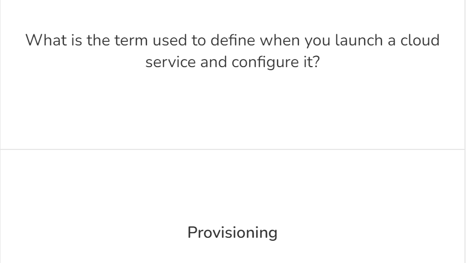
Configuration Drift
Configuration Drift is when provisioned infrastructure has an unexpected configuration change due to:
- team members manually adjusting configuration options
- malicious actors
- side effects from APIs, SDK, or CLIs.
eg. a junior developer turns on Delete on Termination for the production database.
Configuration Drift going unnoticed could be a loss or breach of cloud services and residing data or result in interruption of services or unexpected downtime.
How to detect configuration drift?
- A compliance tool that can detect misconfiguration eg. AWS Config, Azure Policies, *GCP Security Health Analytics
- Built-in support for drift detection eg. AWS CloudFormation Drift Detection
- Storing the expected state eg. Terraform state files
How to correct configuration drift?
- A compliance tool that can remediate (correct) misconfiguration e.g. AWS Config
- Terraform refresh and plan commands
- Manually correcting the configuration (not recommended)
- Tearing down and setting up the infrastructure again
Note: Terraform refresh command is not recommended
Please use the alias command: terraform apply -refresh-only -auto-approve or terraform apply -refresh-only
https://www.terraform.io/cli/commands/refresh#usage
How to prevent configuration drift?
- Immutable infrastructure, always create and destroy, never reuse, Blue, Green deployment strategy.
- Servers are never modified after they are deployed
- Baking AMI images or containers via AWS Image Builder or HashiCorp Packer, or a build server eg. GCP Cloud Run
- Using GitOps to version control our IaC, and peer review every single via Pull Requests change to infrastructure
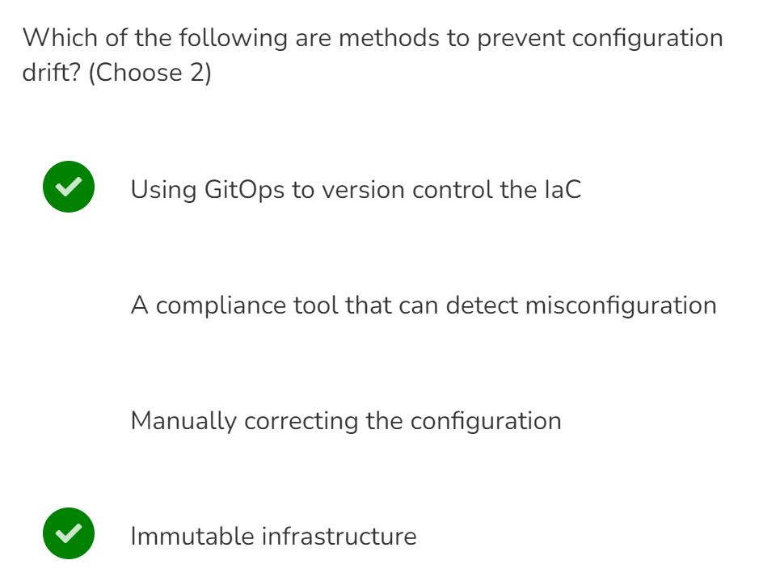
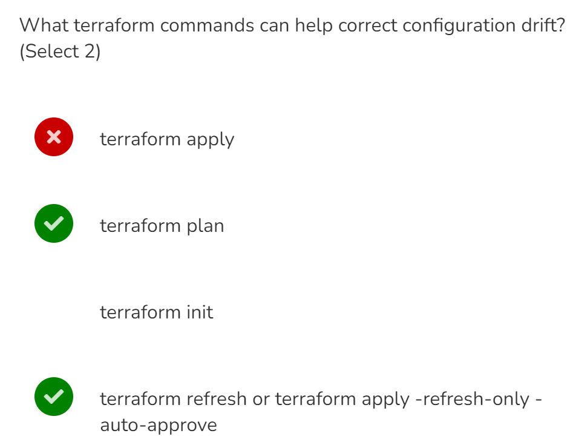
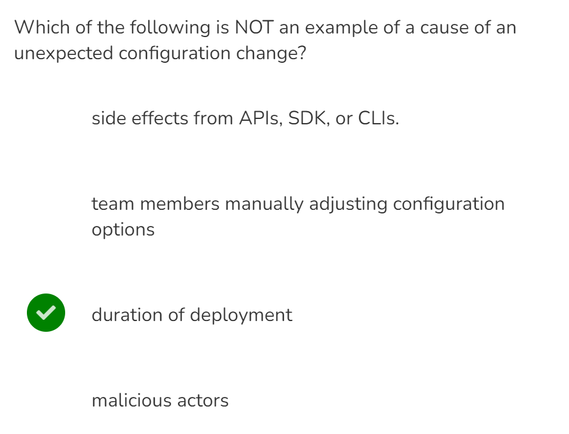
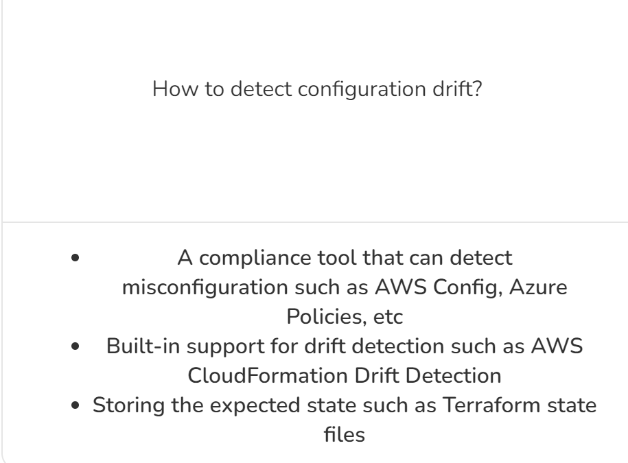
Mutable vs Immutable Infrastructure
Mutable Infrastructure
Develop → Deploy → Configure
A Virtual Machine (VM) is deployed and then a Configuration Management tool like Ansible, Puppet, Chef, Salt, or Cloud-Init is used to configure the state of the server
cloud-init
Immutable Infrastructure
Develop → Configure → Deploy
When a VM is launched and provisioned, it is turned into a virtual image and stored in an image repository. That image is used to deploy VM instances.
Packer
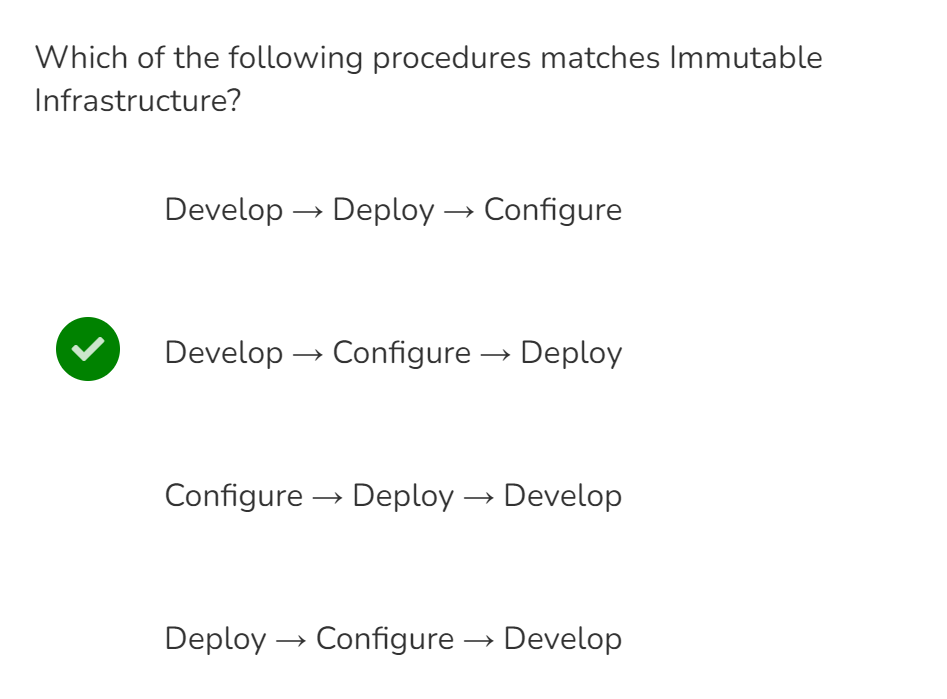
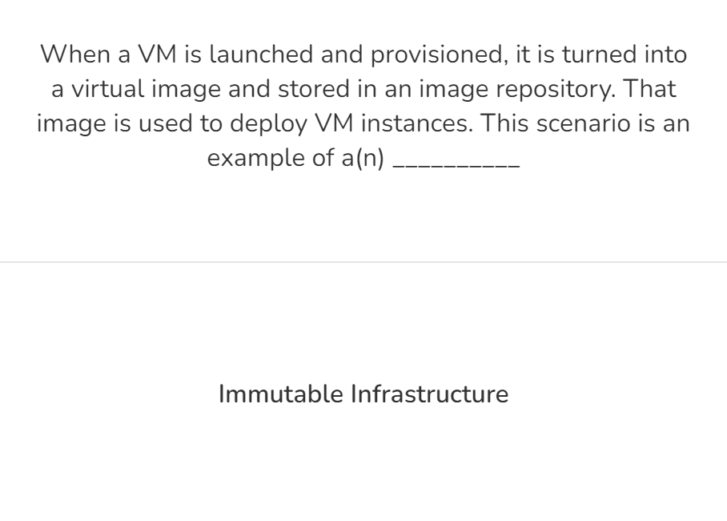
What is GitOps?
GitOps is when you take Infrastructure as Code (IaC) and you use a git repository to introduce a formal process to review and accept changes to infrastructure code, once that code is accepted, it automatically triggers a deploy
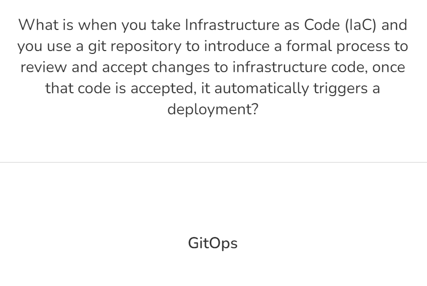
Immutable Infrastructure Guarantee
Terraform encourages you towards an Immutable Infrastructure architect so you get the following guarantees.
Cloud Resource Failure – What if an EC2 instance fails a status check?
Application Failure – What if your post-installation script fails due to a change in a package?
Time to Deploy - What if I need to deploy in a hurry?
Worst Case Scenario
- Accidental Deletion
- Compromised by a malicious actor
- Need to Change Regions (region outage)
No Guarantee of 1-to-1
Every time Cloud-Init runs post-deploy there is no guarantee it’s one-to-one with your other VMs.
Golden Images
- Guarantee of 1-to-1 with your fleet
- Increased assurance of consistency, security
- Speeds up your deployments
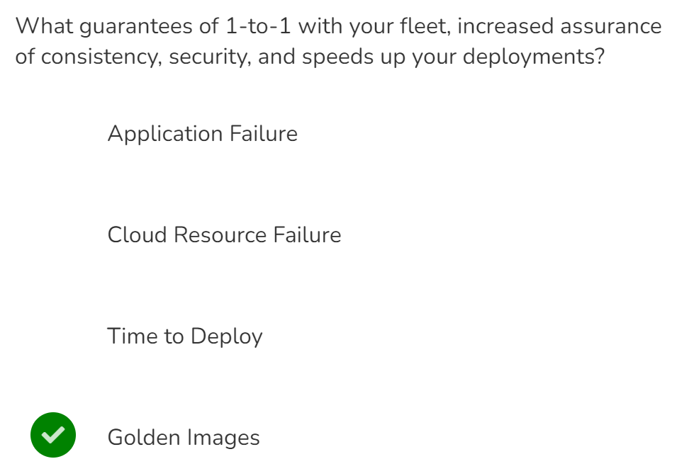
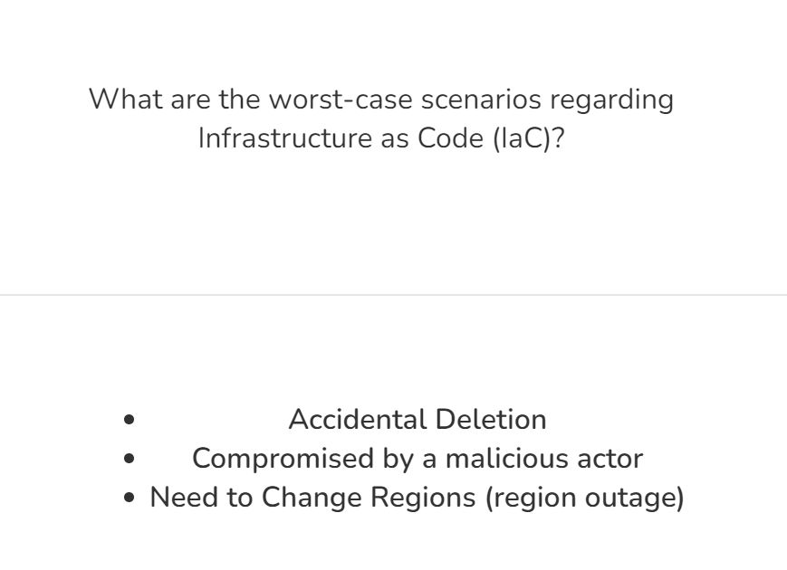